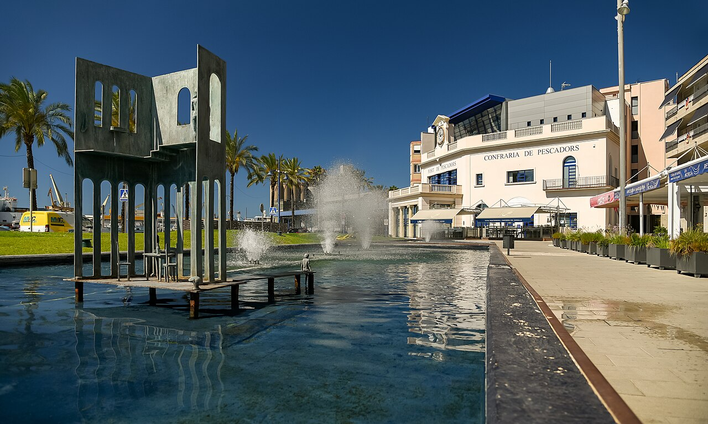
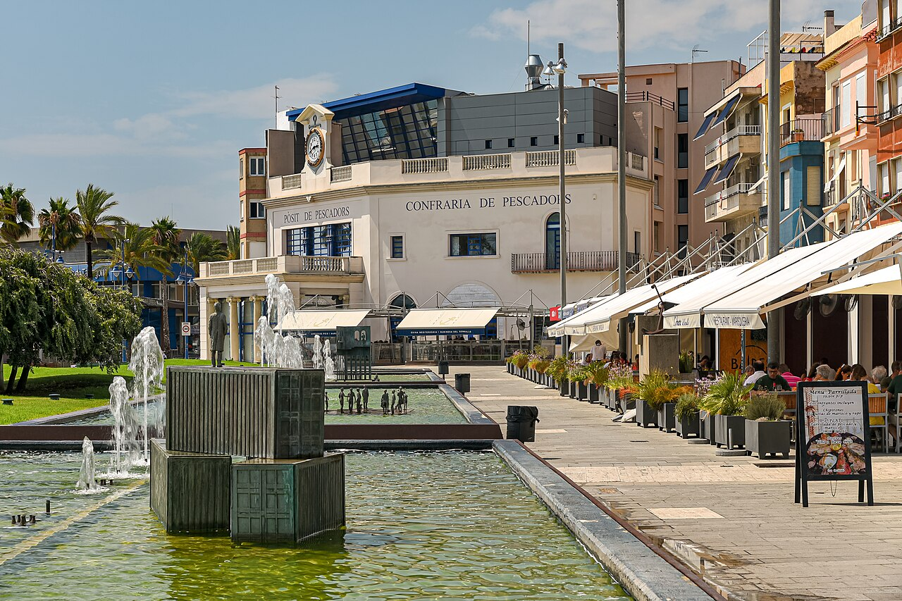

Una subasta donde el precio baja hasta que alguien se atreve
De lunes a viernes, entre las cuatro y las cinco y cuarto de la tarde, en la lonja del Serrallo se decide cuánto vale el mar de ese día. El sistema se llama subasta holandesa y funciona al revés de lo que uno espera: el precio no sube, baja. Arranca alto y va cayendo hasta que un comprador aprieta el botón. Quien espera demasiado, paga menos; quien espera un segundo de más, se queda sin caja.
El proceso está automatizado desde los años noventa y hoy cerca del 40% de la compra se hace a distancia, desde una pantalla, sin pisar el muelle. El pescado blanco —gamba roja, cigala, pulpo, merluza, sepia— se subasta por la tarde, cuando vuelven las barcas de arrastre. El pescado azul se pesca de noche y se vende por la mañana. Entre que una caja sale de la bodega del barco y tiene un precio pueden pasar minutos.
El barrio existe porque el tren echó a los pescadores
Tarragona tiene actividad pesquera documentada desde el siglo XIII, y desde el XIV se conocen las botigues de mar: barracas de madera repartidas por la playa del Miracle y, más tarde, por la desembocadura del Francolí. Pero el barrio del Serrallo, tal como está hoy, no nace hasta mediados del siglo XIX, y no nace por voluntad propia.
Para construir la línea de ferrocarril Tarragona-Reus-Montblanc-Lleida y ampliar el puerto hubo que expropiar los terrenos del arenal donde vivían los pescadores. Se les desplazó a la playa del Llatzeret y se les autorizó a levantar casetas con una condición insólita: que fueran de madera y estuvieran montadas sobre ruedas, para poder moverlas cuando a las autoridades militares les conviniera. Ese es el inicio del barrio.
El nombre llegó poco después y no tiene nada de marinero: viene de la Guerra de África de 1859-1860. La investigación más reciente lo relaciona con el recuerdo de una acción militar en otro Serrallo, un paraje de las afueras de Ceuta. Un barrio de pescadores catalanes bautizado con el nombre de un campo de batalla del norte de África.


Tres artes de pesca, tres mercados distintos
Lo que se subasta depende de cómo se ha pescado. El arrastre, que es la flota mayoritaria, trae gamba roja, cigala, pulpo, merluza, rape, gamba blanca y calamar. El cerco sale de noche con luz y vuelve con sardina y caballa; de ahí viene el pescado azul que se vende por la mañana y que la ciudad promociona bajo el distintivo Peix Blau Tarragona. Las artes menores y el palangre, la flota pequeña, aportan merluza de anzuelo, lenguado, pulpo, atún rojo y emperador.
La gamba roja es el producto que da fama al puerto, y ya le dedicamos un artículo entero: la misma especie que en Palamós o Dénia, pescada aquí a cuatrocientas brazas. Pero la lonja no vive de la gamba. Vive del volumen: los datos de la cofradía hablan de unos nueve millones de kilos y más de doce millones de euros de recaudación, alrededor del 30% de todo lo que mueven los puertos pesqueros catalanes.

Gamba roja recién descargada. En la lonja, el precio de una caja como esta se decide en segundos.
Todo lo que el barrio inventó con lo que no se vendía
Aquí está la parte que más nos interesa a nosotros. La cocina del Serrallo no nació en un restaurante: nació a bordo y nació de un excedente. En los barcos, entre turno y turno, el ranxero cocinaba para toda la tripulación, casi siempre hirviendo el pescado que sabían que no iban a poder vender —el de morro feo, el de calibre pequeño, el que no tenía mercado— con cebolla, ajo, aceite y a veces patata y pimiento.
Cuando quedaba caldo en la olla, se tostaban unos puñados de fideos o de arroz y se les echaba por encima. De ahí sale el rossejat —o arrossejat—, que hoy se sirve en manteles del Baix Camp, el Tarragonès, el Baix Ebre y el Montsià como si siempre hubiera sido un plato de restaurante. La lógica es la misma que la de el romesco, nacido entre estos mismos pescadores, o la del suquet: pan, ñora, ajo, avellana y el pescado que había.
La subasta explica el menú · Una idea para llevarse
Si se mira con calma, la carta clásica del Serrallo es la contabilidad de la lonja puesta en platos. Lo que se vendía bien salía del barrio en cajas: la gamba, el lenguado, la merluza. Lo que no encontraba comprador se quedaba y se cocinaba. El romesco, el rossejat y el suquet no son recetas humildes por estética: son recetas humildes porque las hizo el excedente. Y hoy, con la flota a la baja, buena parte de ese pescado modesto vale más que entonces.
Una flota que cabe cada vez en menos amarres
En 2015 la cofradía declaraba 26 barcos de arrastre con 105 tripulantes, 6 de cerco con 70 y 10 de artes menores y palangre con 14. Una década después, los recuentos hablan de 23 de arrastre, 5 de cerco, 2 de artes menores y 2 de palangre de superficie. El oficio no se ha modernizado: se ha encogido.
La otra presión viene de Bruselas. Para 2026 la Comisión Europea planteó recortar un 65% los días de arrastre en el Mediterráneo. La negociación acabó con un acuerdo de hasta 143 días de pesca, condicionado a mantener las doce medidas compensatorias vigentes: tamaño de malla, vedas, zonas cerradas permanentes y artes que dañen menos el fondo. El sector pedía 180 días y menos papeleo. La discusión no es menor: de cuántos días salga la flota depende qué habrá en la subasta de las cuatro.

El Pòsit de Pescadors y la cofradía, con la hilera de arrocerías y marisquerías a la derecha. Foto: Jorge Franganillo · Wikimedia Commons (CC BY 2.0).
La subasta, el museo y la procesión que sale al agua
La ciudad lleva cinco ediciones con la campaña Peix de Tarragona, tot un gust, que impulsa Tarragona Impulsa con el puerto, la cofradía, los mercados y la hostelería: calendario pesquero con imágenes históricas del barrio, bolsas térmicas en las pescaderías, vídeos sobre economía azul y la exposición Dones de mar, oficis amb nom de dona en el Museu del Port. Desde el Observatori Blau se organizan visitas a la lonja y degustaciones, que es la manera de ver la subasta por dentro sin ser comprador.
Y queda el día grande. Cada 16 de julio, por la Mare de Déu del Carme, la imagen sale a hombros de miembros de la cofradía desde la iglesia de Sant Pere Apòstol, flanqueada por dos pilars de los Xiquets del Serrallo, y al llegar al muelle embarca en una barca de pesca para hacer la parte marítima de la procesión, con el resto de la flota detrás y la bendición de las aguas. Un barrio que se mueve en bloque.
Y nosotros tambiénEl barrio del que salen la mitad de nuestras historias
Si repasamos lo que hemos ido publicando, el Serrallo aparece una y otra vez: en el garum romano, en el romesco, en la gamba. No es casualidad: dos mil años de una ciudad comiendo lo que entra por el mismo sitio. La próxima vez que en una carta ponga «pescado de lonja», vale la pena preguntar de qué lonja y de qué día. La respuesta se decide a las cuatro de la tarde, a diez minutos de la Part Alta.
Fuentes consultadas: Confraria de Pescadors de Tarragona, Port de Tarragona (Vicent M. Garcia Llopis, «El Serrallo: origen del nom del barri de pescadors de Tarragona»), Tarragona Impulsa, Tarragona Experience, Departament d'Agricultura de la Generalitat, 3Cat, Diari Més, VilaWeb, Arquebisbat de Tarragona, Viquipèdia (El Serrallo). Imágenes: Jorge Franganillo, vía Wikimedia Commons (CC BY 2.0); archivo propio.
Newsletter
¿Quieres recibir la próxima crónica antes que nadie?
Crónicas de los restaurantes visitados, vinos recomendados y novedades del Camp de Tarragona. Cada quince días, sin ruido.
Sin spam · Date de baja cuando quieras.
Más cocina de mar del Camp de Tarragona
 Curiosidades
Curiosidades
El romesco · La salsa que nació en el puerto
Pan, ñora, ajo, aceite y avellana tostada: la receta que los pescadores del Serrallo hicieron con lo que tenían a bordo.
Leer → Curiosidades
Curiosidades
La gamba de Tarragona · Producto, memoria e identidad
La misma especie que en Palamós o Dénia, pescada a 400 brazas y subastada en esta misma lonja cada tarde.
Leer →